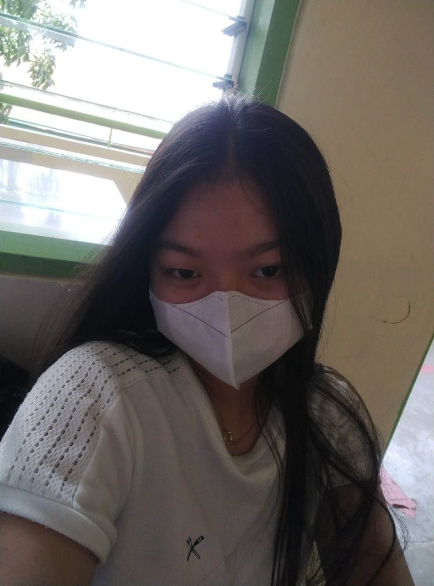

IT Student & Web Developer
Email
erianelorainem@gmail.com
Phone
Upon Request
Education
PUP Sto. Tomas Campus
DIT 2-1
Location
Tanauan City, Batangas
I am a 2nd-year Information Technology student with a passion for clean, minimalist web design.
Currently, I am focusing on mastering the TCP/IP Protocol Suite and Windows Server 2022 while building front-end projects that emphasize glassmorphism UI and a clean green aesthetic.
A minimalist web platform for a beauty brand featuring custom video players and BINI-inspired audio integration.
HTML/CSS JSA collaborative Computer Programming 2 project hosted on GitHub.
GitHub CollaborationBuilding responsive sites with Bootstrap 5, focusing on glassmorphism and modern UI trends.
In-depth research on TCP/IP implementations and server administration via Active Directory.
When I'm not coding, I scale recipes for Basque Burnt Cheesecakes and cinnamon buns, or binge-watch Suits.